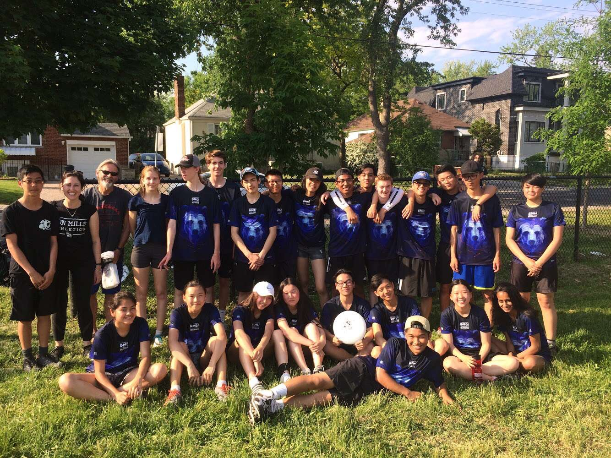

Since grade 5 of elementary school, I have enjoyed playing Ultimate Frisbee. I loved the sport because I got to play with my friends on the school team. Now, in recent years I would go to join the Toronto Ultimate Frisbee Club to learn how to play better,
and play with a team. It was at this point where I got really into the sport, since I could be creative with how I could play. I then took these skills with me to my highschool team, where I co-captained in grade 11. Unfortunately,
I did not get to play one last year with my friends in grade 12 due to Covid-19.
In my free time, I like to play the guitar. I find that learning how to play an instrument is stress-relieving. I've only been playing for 1 year, but I enjoy playing it a lot.
Another reason why I enjoy playing the guitar so much, is the social interaction of musicing. I love learning how to play better from others, to be able to connect with them through music, and to play around with different songs with them. I find that
when you play with others casually, music is much more enjoyable. So far, I have played bass guitar in my praise team, and played the guitar at a student show.
When I'm not playing the guitar, I like to cruise around on a skateboard. I enjoy exploring the neighbourhood on a skateboard. Like the guitar, I find that skateboarding is also therapeutic. I think that taking a break from looking at a screen, and instead
being outside skateboarding is very beneficial for both the mind and the body. During quarantine, I skated a lot just to get out of the house.